Weather, drawn in text.
wxterm is a full-screen terminal weather display: a live radar loop and live air traffic over a line-drawn map, conditions, a 48-hour graph, tides, the moon and the forecast, in ASCII, box-drawing and braille. It runs on an old laptop as a kiosk with no desktop, or in any big terminal window.
New in 1.5: earthquakes and wildfires on the map, from free sources with no keys. From 1.4: APRS stations, contributed by Steve Miller, KC1AWV. From 1.3: spacecraft over the map, and laptops can sleep with the lid shut. From 1.2: live air traffic, contributed by Justin Van Bibber. Still in early testing: Raspberry Pi 4 and 5 support.
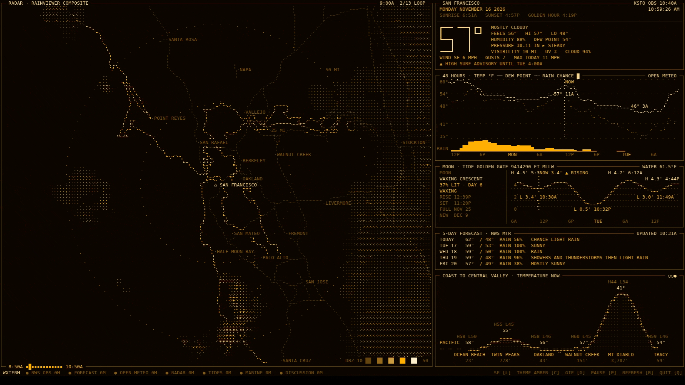
What's on the screen
- Radar
- The last two hours of radar, looping over coastlines, borders, highways, towns and airports, with range rings. Zoom from 5 to 100 nautical miles.
- Now
- Temperature in seven-segment digits, feels-like, wind, humidity, pressure trend, and any alerts.
- 48 hours
- Temperature and dew point as braille line plots over rain-chance bars.
- Tide · moon
- The tide curve through tomorrow with every high and low, plus the moon phase, rise and set.
- 5-day
- Highs, lows, rain chance and a few words for each day.
- Spacecraft
- The ISS, Tiangong, the brightest satellites and Starlink crossing the map with their ground tracks, a countdown to the next station overhead, and the passes you can see from home.
- Quakes · fires
- Earthquakes worldwide as rings sized by magnitude, US wildfires with their perimeters, size and containment, and large fires elsewhere.
- Air traffic
- One key puts live flights on the map: aircraft as arrows with trails and data tags, runways, and the radar loop still running underneath. Contributed by Justin Van Bibber.
- Rotating
- A panel that cycles between the forecaster's discussion, typed out like a teletype, the surf, and temperatures from the coast inland.
Small touches
- l
- Next location. Ten are built in: yours plus nine demo cities from San Francisco to Tokyo.
- w a o
- Radar, air traffic and spacecraft, each on or off; e and i do the same for earthquakes and wildfires. + - change the range, Tab picks a flight, t cycles the data tags.
- g
- Record exactly one radar loop as a GIF. Every GIF on this page was made that way.
- f
- Big digits as segments, braille dots or blocks.
- s
- Shuffle the layout. It also happens every 15 minutes, so nothing burns in.
- Any size
- Built for 240×62 cells at 1080p. The layout follows the terminal down to about 160×45.
Install
On any Linux or macOS machine with Docker and Python 3.11 or newer:
$ git clone https://github.com/jdoscher/wxterm && cd wxterm
$ python3 scripts/new-location.py home 47.6062 -122.3321 --title "SEATTLE"
$ python3 scripts/gen-compose.py
$ cp .env.example .env # your contact for the NWS API
$ docker compose up -d --build
$ cd display && python3 -m venv .venv && .venv/bin/pip install -e .
$ .venv/bin/wxtermnew-location.py takes a name and coordinates and looks up the rest: timezone, weather
station (NWS in the US, the nearest airport elsewhere), tide and water-temperature stations,
surf spot, map lines and town labels. Your home location is gitignored.
Outside the US you get airport observations and the Open-Meteo forecast. Alerts and the forecast discussion are NWS products, so those panels are skipped.
Air traffic
Press a and live flights cross the map, through the radar loop if it's on. Each aircraft is an arrow along its track with a braille trail and a data tag: callsign, type, route, altitude with climb or descent, and ground speed. A traffic list beside the map shows everything in view, nearest first, and Tab picks a flight for its details. w turns the radar off for just the sky, and + - zoom both.
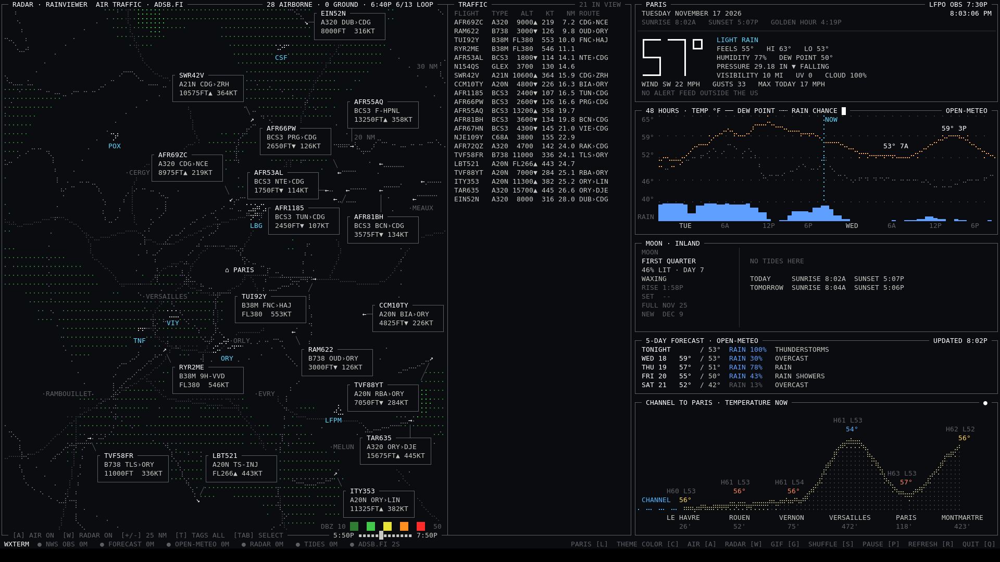
The flight tracker is the work of Justin Van Bibber, who ported
AsciiFlights onto wxterm's map. Thanks, Justin. Aircraft come from the free
adsb.fi feed and are fetched only while air traffic is on.
It's off by default; AIR=on in kiosk.conf turns it on at first start.
Spacecraft
Press o and the map shows what's overhead in orbit: ◆ the space stations and ◇ everything else, each with its name, altitude and a dotted ground track a minute and a half behind and ahead. A satellite crosses a 100 NM map in about a minute, so they come and go all day. When no station is over the map, the top border counts down to the next one, and a page of the rotating panel lists the stations' passes you can actually see from home: in sunlight, in a dark sky, at least 10° up.
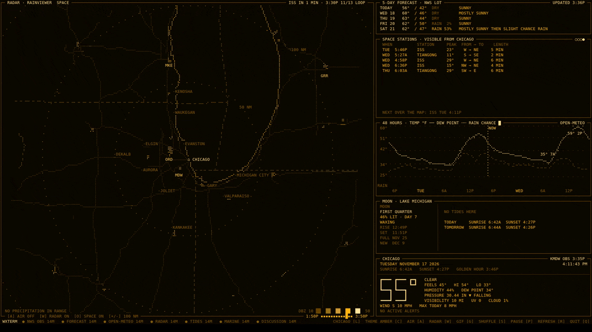
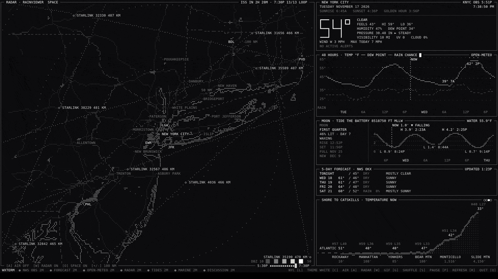
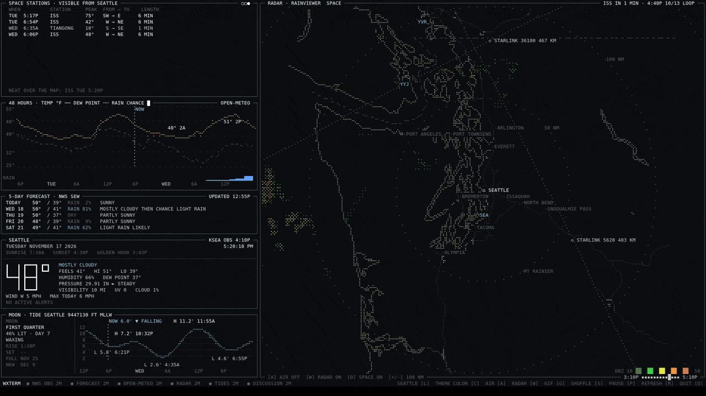
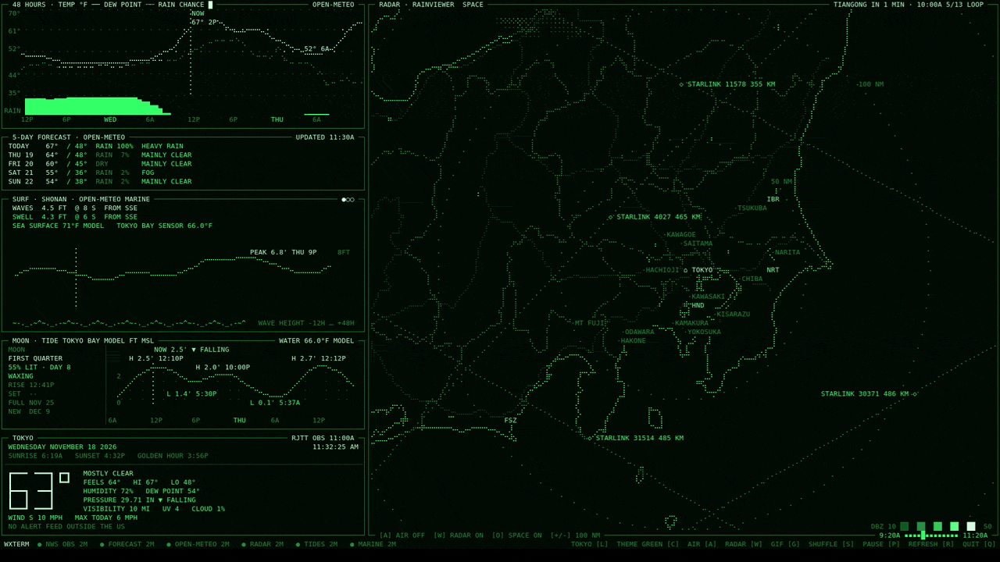
Each GIF is one real pass recorded on the kiosk and played back at three times the speed. Orbits come from
CelesTrak a few times a day, and positions are worked out on the machine with
SGP4, so the layer makes no other network requests. It's on by default; SPACE=off in
kiosk.conf turns it off.
APRS
Licensed hams can put their callsign in kiosk.conf and the map shows the APRS stations heard
around home: every station as a symbol with its callsign, tracks behind the ones that move, and the volunteer
weather stations' temperatures laid out like a surface map. x cycles all stations, weather stations
only, and off, and two pages of the rotating panel list who was heard last and the nearby weather stations next
to the official observation.
It's receive-only: wxterm logs in to APRS-IS with passcode -1, so nothing is ever transmitted or gated, and the filter around home is rounded so your exact location stays on the machine. APRS is the work of Steve Miller, KC1AWV. Thanks, Steve.
Earthquakes and wildfires
Two more layers, both on by default. Every earthquake from the past day shows as a ring sized by its magnitude, bright for the first hour with its age beside it, then fading through the week, and the top border names a new one as it comes in. US wildfires appear as ▲ with their name, acres and containment, with the mapped fire perimeter hatched in around them. A page of the rotating panel lists the week's quakes within 300 miles, and another the nearby fires. e and i switch them.
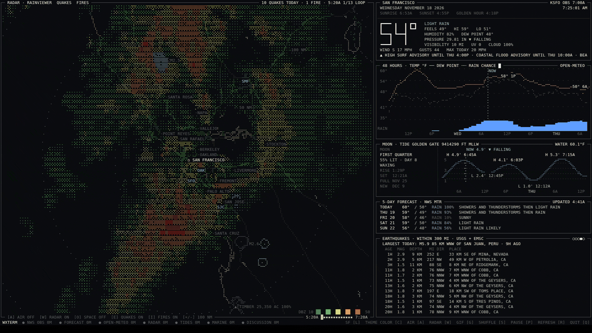
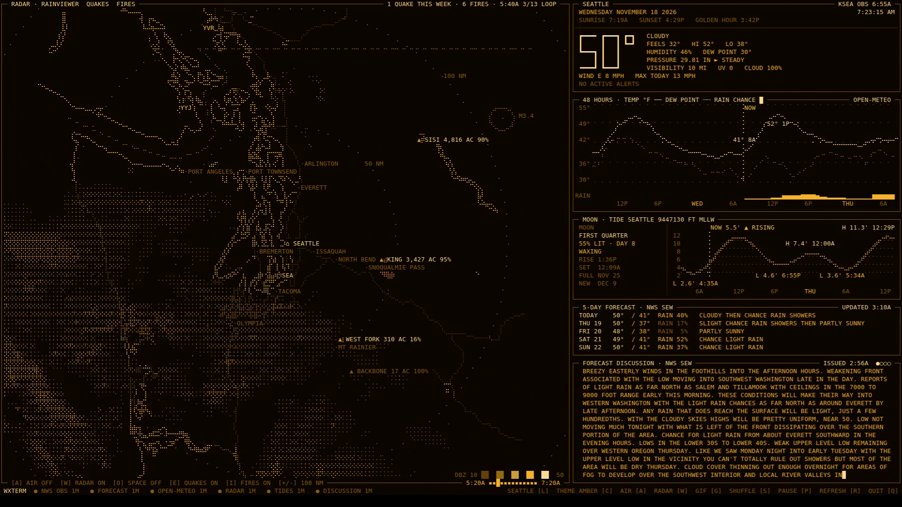
No keys and nothing to sign up for: earthquakes come from the USGS and EMSC, merged so a quake both report shows once; US fires from the National Interagency Fire Center's WFIGS service; and large fires elsewhere from GDACS. One collector fetches the worldwide lists for the whole machine, quakes every five minutes and fires every fifteen.
A kiosk, not a window
wxterm was built for an old ThinkPad that does nothing else. One script turns a Debian or Ubuntu machine into a weather terminal: it boots straight to the display, with no login screen and no desktop, and ignores the lid and sleep.
$ sudo mkdir -p /opt/wxterm && sudo chown "$USER": /opt/wxterm
$ git clone https://github.com/jdoscher/wxterm /opt/wxterm && cd /opt/wxterm
$ cp kiosk/kiosk.conf.example kiosk/kiosk.conf
$ python3 scripts/new-location.py home LAT LON --title "YOUR TOWN"
$ sudo bash kiosk/setup.sh && sudo rebootUnder the hood it's cage running
foot fullscreen. The bare Linux console can't
show braille, so wxterm skips it. One config file covers every setting, and
mode.sh desktop gives you the normal desktop back.
Raspberry Pi? See below.
The data side runs in Docker, one small collector per location, so switching cities is instant. The display itself is Python with Textual.
Raspberry Pi Early testing
You need a Raspberry Pi 4 with 4 GB or more (a Pi 5 should also work), a 1080p screen on HDMI, and ideally a USB SSD to boot from. The collectors write their cache every few minutes around the clock, which wears out SD cards.
- In Raspberry Pi Imager, flash Raspberry Pi OS Lite (64-bit). In its settings, set a username, your Wi-Fi if needed, and turn on SSH.
- Plug the screen into the HDMI port next to the power socket, boot, and SSH in.
- Run the commands on the right, with your own coordinates. The first run downloads map data and builds the Docker images, so it takes a while. After the reboot the Pi goes straight to the weather.
$ sudo apt update && sudo apt full-upgrade -y && sudo apt install -y git
$ sudo mkdir -p /opt/wxterm && sudo chown "$USER": /opt/wxterm
$ git clone https://github.com/jdoscher/wxterm /opt/wxterm && cd /opt/wxterm
$ cp kiosk/kiosk.conf.example kiosk/kiosk.conf
$ sed -i 's/^PROFILE=standard/PROFILE=pi/' kiosk/kiosk.conf
$ python3 scripts/new-location.py home LAT LON --title "YOUR TOWN"
$ sudo bash kiosk/setup.sh && sudo rebootPROFILE=pi runs four cities (home, San Francisco, London, Tokyo) instead of ten and animates a
little slower. Choose your own with LOCATIONS="home nyc paris" in kiosk.conf.
Not known yet: load and temperature over days of running, GIF encode time, and whether a Pi 5 or a 2 GB Pi 4 wants different settings.
Ask your LLM
An optional, read-only MCP server lets Claude or any MCP client read the weather and the kiosk's status, and take a screenshot. It can't change anything. It's off by default, requires a token, and refuses requests from browsers.
$ claude mcp add --transport http wxterm \
http://KIOSK:8090/mcp --header "Authorization: Bearer TOKEN"Is it raining in San Francisco?
get_radar_summary(location="sf")
Yes: heavy rain over the city right now, drifting west-southwest at about 12 mph.
Is the kiosk running hot?
get_status
No. The CPU is at 42 °C, both batteries are full on AC power, and all ten collectors are up to date.
Free data, no keys
| What | Source |
|---|---|
| Conditions | NWS stations in the US, aviationweather.gov METARs elsewhere |
| Forecast | NWS, and Open-Meteo for hourly data and places outside the US |
| Radar | RainViewer composite, with IEM NEXRAD as a US fallback |
| Tides | NOAA CO-OPS, or Open-Meteo's sea-level model where there's no gauge |
| Surf | Open-Meteo marine |
| Sun · moon | Computed locally |
| Aircraft | adsb.fi open data, with adsb.lol as a fallback; routes from adsbdb |
| Earthquakes | USGS and EMSC |
| Wildfires | NIFC WFIGS in the US, GDACS elsewhere |
| Maps | Natural Earth (public domain), OurAirports runways and GeoNames town names |
Around the world
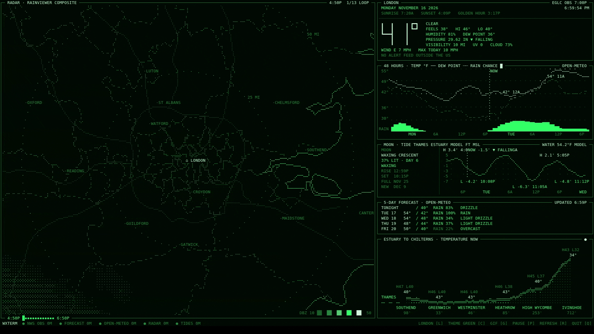
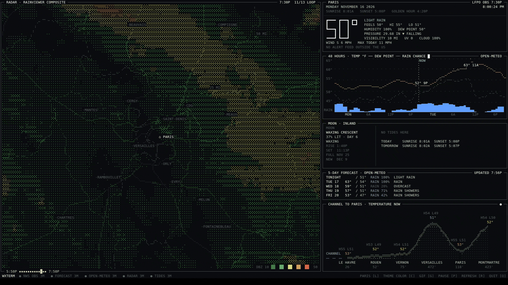
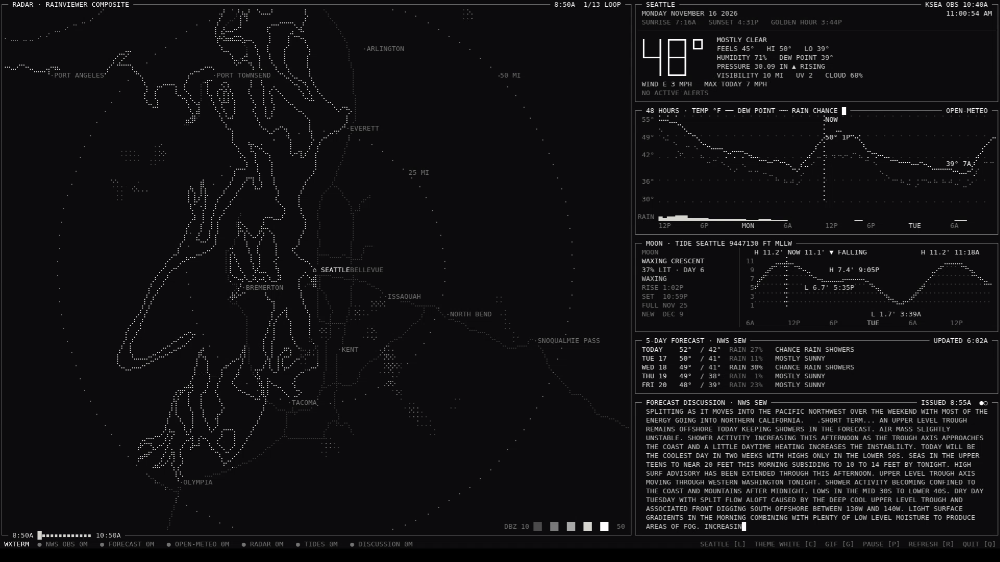
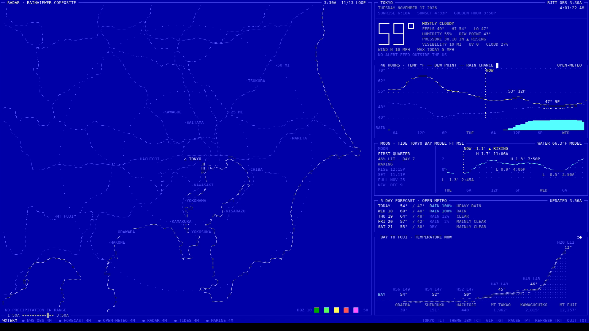